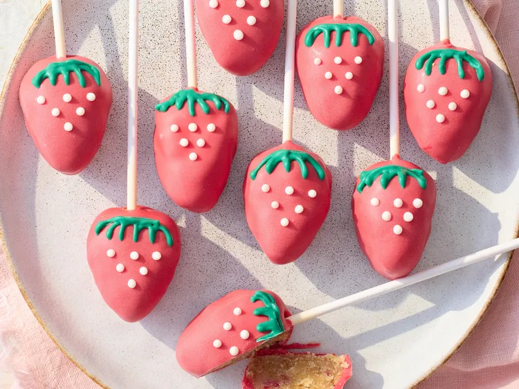

Cake Pops

These sweet berry cake treats will sweeten any special day. If you like, shape into hearts rather than triangles and omit the white and green piping—prefect for Valentine’s Day!
(15.25-ounce) box vanilla cake mix, plus ingredients on box to make cake
2 tablespoons unsalted butter, softened
1/2 teaspoon vanilla extract
1/4 cup finely crushed freeze-dried strawberries
Bake Cake: Prepare and bake cake mix in a 9x13-inch baking pan according to package directions, 25 to 35 minutes. Let cake cool slightly in pan until cool enough to handle, about 10 minutes.
Line a large baking sheet with parchment paper. Portion mixture into 30 (1 1/2-inch) balls using a #40
Shape each ball into a rounded triangle and gently insert a cake pop stick from bottom side of triangle; arrange on prepared baking sheet. Chill, covered, until firm, at least 30 minutes (or up to 1 day).
Home